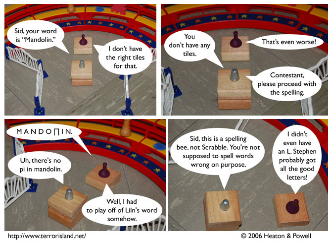

Strip #25
— Wednesday, August 9, 2006
Had Sid’s play gone unchallenged, he would have earned 13 points.
Notes, Thoughts, &c.
Ben’s Notes
I just ascended in Nethack as a Healer, and managed to tame two of the Riders. If you want more information ask me about it sometime.
Oh, and this strip has Scrabble in it, which is good.
Lewis’s Notes
Astute readers will note that neither Sid nor Stephen are blindfolded, strongly implying that their contest has ended. Awesome readers will speculate in the forums on who won and when they will be having their birthdays.
On a more serious note, I’d like to encourage any of our readers who don’t frequent the forums to consider contributing to this thread, which is specifically for telling us how you found out about Terror Island. To give us an idea of where our readers are coming from.